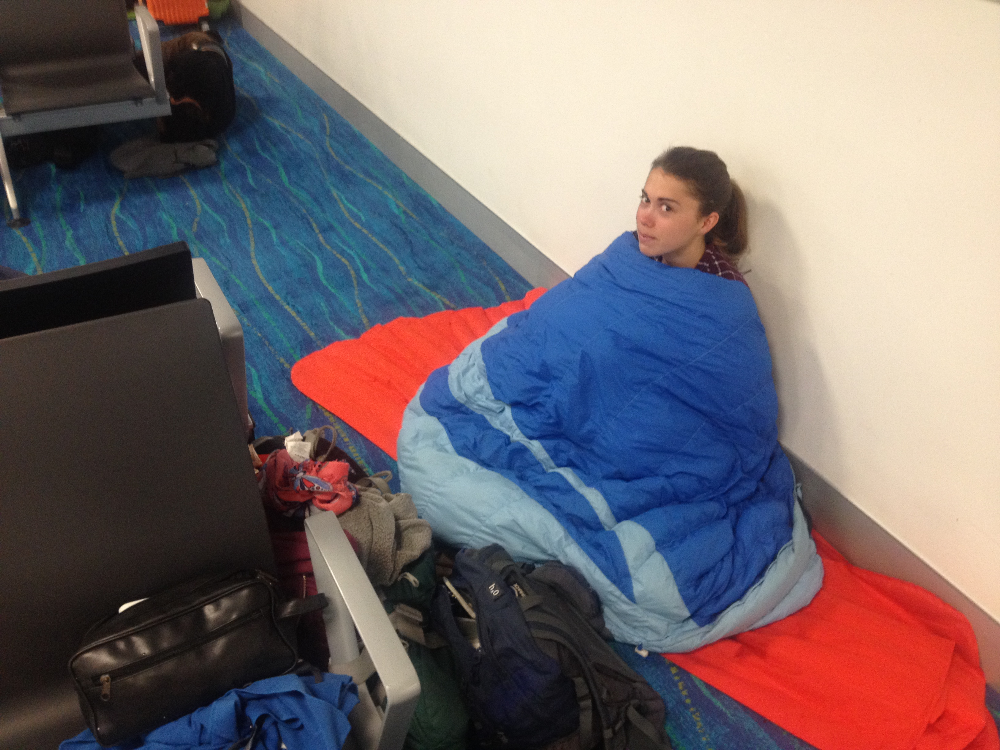
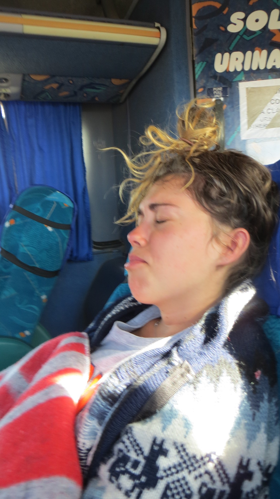
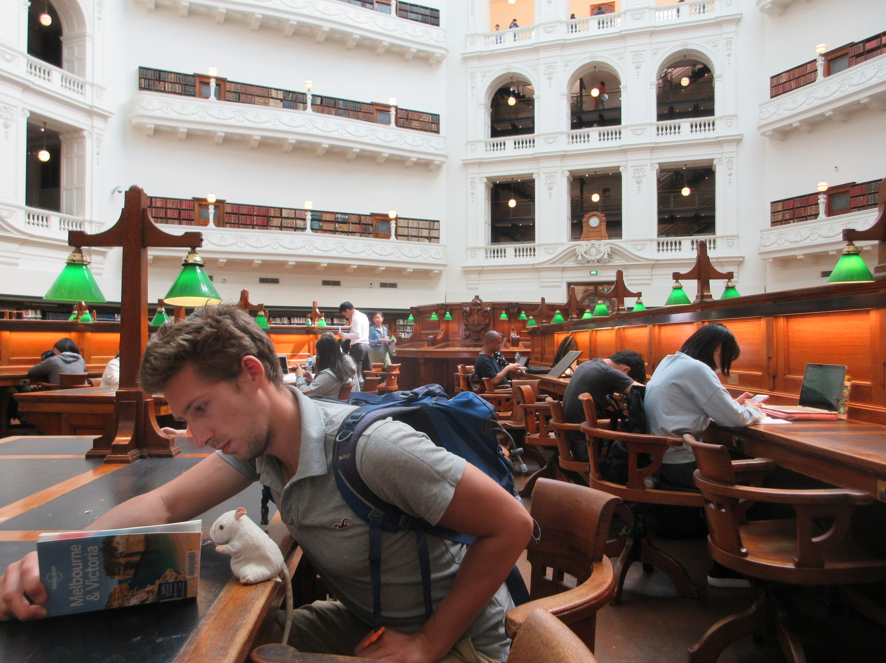
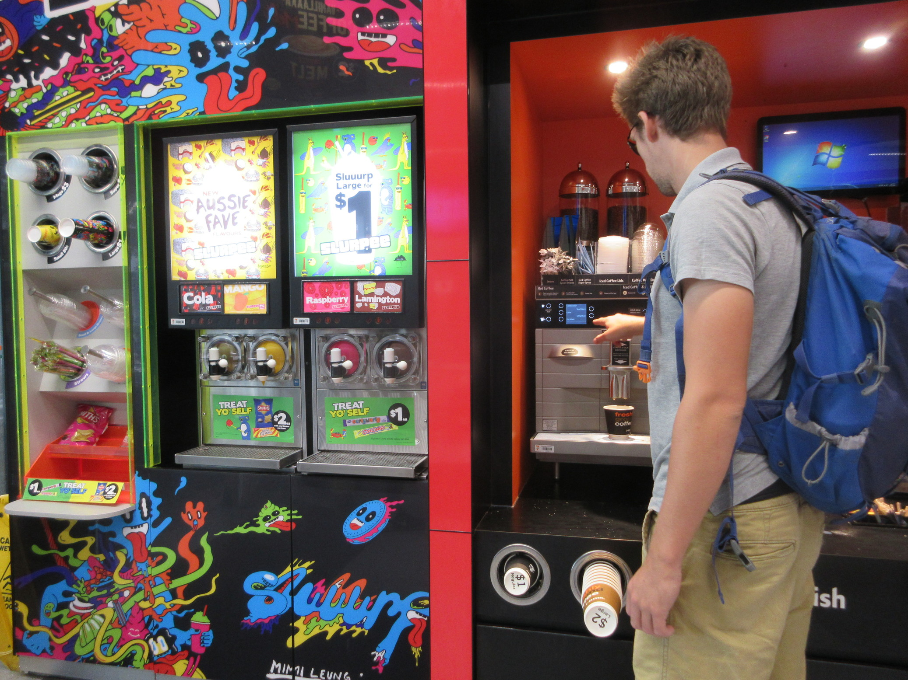
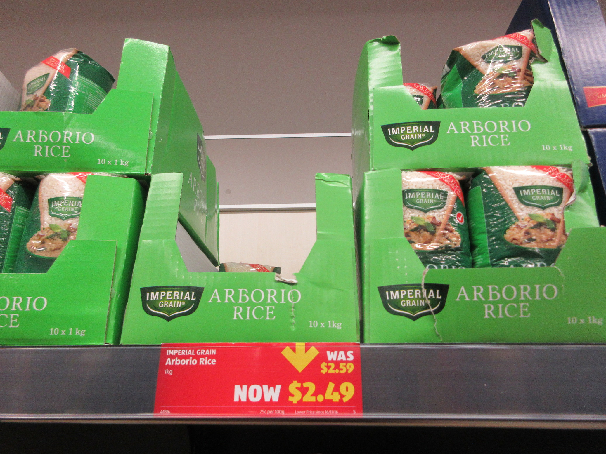
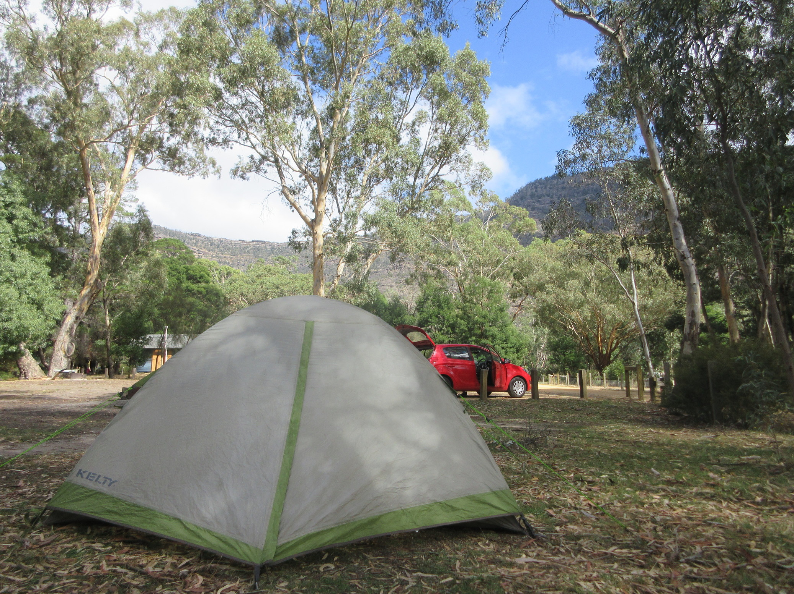
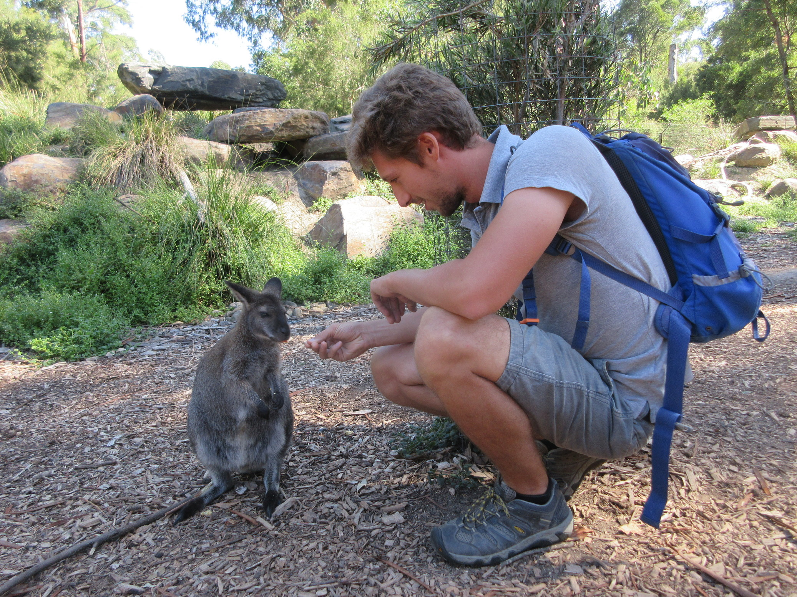
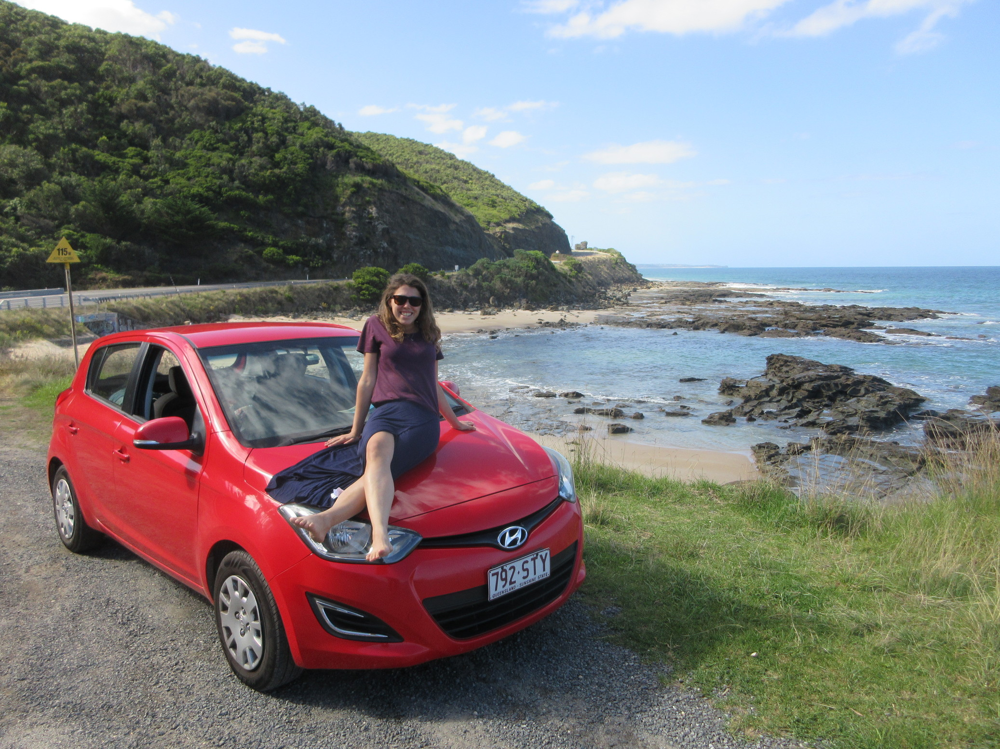

- TheUpRoutedBlog
- BLOG POSTS
- OUR ROUTES
- THE JOURNEY SO FAR
- VIDEO CHANNEL
- PHOTOGRAPHY ARCHIVE
On the left we have us on the road. On the right we have us in Australia.


Yes we knew Australia is an expensive place to be. That's why we went to work there. That's why everybody goes there. You spend a lot of money, you make a lot of money and enjoy the Aussie way of life. It's a win-win...
And then Brexit happened:


And suddenly your (GBP) savings and your (granted, slightly better) salaries aren't getting you as far. It's OK though, there are a few ways to beat the system. After an extended period of time in Melbourne and short hops through Sydney and Darwin, here's a few things we picked up on that saved us a lot of money in the long-run:
WIKICAMPS APP: If you're planning on doing the whole buying/renting a fired out combie and doing the road trip thing, Wikicamps might just be your saviour. A lovely Israeli couple enlightened us to it's powers: it can point you in the direction of all the free camping and caravan sites where ever you want to go and navigate you there offline if need be. Each time we used it, it was 100% spot-on. On top of that, the app gives you access to traveller reviews and a list of the free facilities available at the site (drinking water, showers etc.)
AIRBNB: For two humans comfortable sharing a room together, Airbnb can be your cheapest and most comfortable option while doing the work stint of your visa. It certainly was for us in Melbourne. Backpacking Hostels are great but they're not the best places when you're working long hours and are strapped for cash. Our private double room in an Airbnb in Melbourne suburbs (15 min train from the CBD) was half the price of 1 bed in a 12 person dorm in the YHA North Melbourne. Many properties also offer good discounted rates on longer term bookings eg. +1 month.
DRINKING WATER:At $2.50 for a small bottle of water in your standard 7-eleven ($5.80 for 1.5l in the Grampians), this service is essential for money saving on the road. Most parks and shopping streets in major cities and towns are abundant with drinking water fountains. Unless you are really stuck in the middle of the bush, there is no need to pay for water.
SHOWERS/PUBLIC BATHROOMS: Another great thing about Australia is the immaculate quality of most public bathrooms, some even come equipped with showers. If you are car camping/tent camping round the coastal road and are in need of a wash, head to the beach for a shower - just maybe check regulations for shampoo/soap usage first.
LIBRARIES: Free wifi, computer use and a literal library of games and DVDs to choose from. Streaming netflix on your phone can be a bit annoying, so get a free library card (it took us less than 5mins) and do some old-school renting! It's a great resource for Lonely Planets and other travel guides too and a free place to spend an afternoon cooling off in the air-conditioning if your accomm doesn't offer such luxuries.


WIFI: Don't assume (like we did) that because it's Australia you will have free super fast wifi in your hostel. Some make you pay an extra amount each day to use it. Some have it but it is very terrible because the hostels are very large and everybody is constantly online (pro Airbnb point). There's so many places with free wifi, however, all over Australia it doesn't really matter. If you're staying a while and getting an Aussie SIM card, we got more data on Optus than we knew what to do with. Our $30/month pay and go, which started with a bonus 6GB that would rollover if we didn't use it, kept us happy for 3.5 months.
PUBLIC BBQS: You're in Australia. It would be rude not to. Hanging out with your friends drinking some beers and cooking up some snags in the park is a much cheaper and more fun option than a $30 meal out and a couple of $12 pints. Check the regulations on drinking alcohol in public places as it wildly varies. Australian police do not come top of the list for using discretion.
PRINTING/COPYING: If you have a stack of CVs to print out, you can easily do it at Officeworks for 8cents a sheet. They also offer sometimes offer scanning and passport photo facilities, as well as selling a lot of stationary and electrical products, including phones, portable wifi and memory cards.
7-ELEVEN'S $1 COFFEE: Yes, Australia has many chic, top-quality coffee haunts to lust after, but at Sev's you pay $1 instead of $4.00+ and you still get a tasty cup of 100% arabica. If coffee isn't your thing, the 80cent slurpees are a great thirst quencher.
SUSHI ROLLS: $2.30 for a sushi roll, $10.00 for a bento box. It's not the cheapest lunch option but relative to sushi elsewhere in the world (minus Japan, obviously), Australia is the place to indulge.
ALDI/ALDI ALCOHOL: Aldi isn't exactly as cheap as Europe here but it is less expensive than other supermarkets. The cheap $2.89 wine gives you something to pre-drink, and if you're feeling flash anything at $4.50 isn't half bad. They also do 6 packs for $8-10, which is good, considering the regular options.
KNOW WHAT TO BUY: Avoid tomatoes, mushrooms, broccoli and wait for offers. Most fruit and veg is probably more expensive than you're used to; it's just something you have to accept and not buy more than you need. Places like Vic Market in Melbourne help soften the blow when picking up fresh produce. On the plus side, you'll find canned tuna, hummus, sweet chilli sauce, basa (fish), your fave carb staples and many other completely random supermarket items dirt cheap for no apparent reason. Just watch out for them.
DON'T ASSUME THE PRICE: In Sydney we spotted small packs of TimTams for $4. Further inside the shop, they were selling jumbo packs for $2.25. Pricing rarely makes sense in supermarkets: a pack of 4 plain donuts might set you back $7, whereas you can buy one of the fancy Lindt chocolate boxes someone always gets you for Christmas for $5. Fredo frogs can vary from 50c to $1.75. A loaf of bread might be $6 in the smaller towns even if in the same supermarket in the city it's $1.25.
WATCH OUT FOR OFFERS: Supermarket offers can be downright laughable. Just because something says it's reduced, doesn't mean your going to save more than 10cents. On the other hand, there are usually some great ones if you dig hard enough. Coles and Woolworths both reduce their baked goods in the evenings (Coles cookies are a personal fave). Similarly, fresh fish, pre-prepared bento boxes often have a few dollars knocked off at the end of the day and the deals you get on 'lollies' (all chocolate and sweets) are usually pretty decent.


We found that public transport within cities is generally a reasonably priced and efficient way of getting around.
MELBOURNE: Your 'Myki' card (free with $10 credit top-up) can get you from deep in the western suburbs to the Mornington Penninsula for the $8.10 daily cap, with $4.10 being the standard single charge for any journey within 2 hours. On weekends, this maximum spend is reduced further to $6.00. Trams within the CBD are all completely free of charge and trains cost nothing before 7:30am. Useful if like Alex you are labouring for your working holiday visa and start at 6am most days.
SYDNEY: The 'Opal' card (also free with a $10 top-up) gets you a % off the standard single fare for each journey, as well as having a $15 (roughly) cap everyday. Unfortunately, this maximum doesn't include the airport (see below), but it was still worth us having them for the 48hrs we had to see Sydney. You can use them on the ferry to get across to all the bay towns and popular tourist destinations, even as far out as the Blue Mountains. What's more, on a Sunday you can do all of this for a daily spend of $2.50.
Getting to/from the airport can be a frightening prospect for your wallet. You can be $20+ down even before you get to where you want to go. And trust us, you might be grateful that extra $20+ after a few weeks down under. Obviously, google recommend the appropriate ways of getting into various cities from the airport, but if you're as tight as us and don't mind a 15 min stretch of the legs after a long flight, try and beat the system and find your own way into town. Here's a few of our alternatives:
SYDNEY: Yes! There's a metro link and only 3 stops to the centre, result. You prepare to get your Opal card and pay the $3.38 (about $4 for a single journey ticket). Great. Almost too good to be true. Because it is. There's an extra $17 charge to go through the gates to the metro at the airport. We did not like this one bit. Of course you expect airport transport to be a bit more, but an extra $17 for no real reason seemed extortionate. If it does to you too, it's about a 15/20 min walk to the next station on the line, Mascot, where standard fees apply. If you don't like walking, there's a bus that will take you there too, but of course it's another $3.38. If you're still not keen on that, it's still cheaper and just as time consuming to get an Uber to 'Mascot', instead of go through the airport gates.
MELBOURNE: The internet may lead you to believe the SkyBus ($18) is the only option, but you can get into Melbourne/St Kilda fairly hassle-free via public transport. The 901/902 bus will take you to Broadmeadows Station in the northern suburbs, where you can jump on a train to most major Melbourne stations. From the CBD, you can pretty much reach anywhere. There are also a fair few trams that go up to the airport, but as we didn't take this route it would require a bit of research.
DARWIN: There is a shuttle bus that goes straight to Darwin for $20, but it is key to remember that this is timed with the arrival of flights, so if you're planning at doing some sleeping at the airport and waiting til morning for the bus, make sure you check the times as it won't leave unless it has reason to. Alternatively, you can walk for about 15 min down Henry Wrigley Drive to the bus stop on the opposite side of the road and to the right of the first main intersection you come across (it's marked on maps.me). This bus leaves every 30mins-1hr sporadically so check the schedule. It goes all the way through downtown to the bus terminal for $3.

